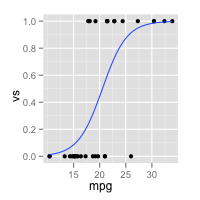
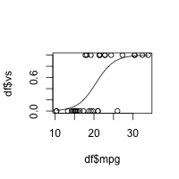
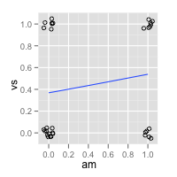
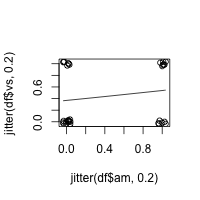

Logistic regression
Problem
You want to perform a logistic regression.
Solution
A logistic regression is typically used when there is one dichotomous outcome variable (such as winning or losing), and a continuous predictor variable which is related to the probability or odds of the outcome variable. It can also be used with categorical predictors, and with multiple predictors.
Suppose we start with part of the built-in mtcars dataset. In the examples below, we_ll use vs as the outcome variable, mpg as a continuous predictor, and am as a categorical (dichotomous) predictor.
data(mtcars) df <- subset(mtcars, select=c(mpg,am,vs)) # mpg am vs # Mazda RX4 21.0 1 0 # Mazda RX4 Wag 21.0 1 0 # Datsun 710 22.8 1 1 # Hornet 4 Drive 21.4 0 1 # Hornet Sportabout 18.7 0 0 # Valiant 18.1 0 1 # Duster 360 14.3 0 0 # Merc 240D 24.4 0 1 # Merc 230 22.8 0 1 # Merc 280 19.2 0 1 # Merc 280C 17.8 0 1 # Merc 450SE 16.4 0 0 # Merc 450SL 17.3 0 0 # Merc 450SLC 15.2 0 0 # Cadillac Fleetwood 10.4 0 0 # Lincoln Continental 10.4 0 0 # Chrysler Imperial 14.7 0 0 # Fiat 128 32.4 1 1 # Honda Civic 30.4 1 1 # Toyota Corolla 33.9 1 1 # Toyota Corona 21.5 0 1 # Dodge Challenger 15.5 0 0 # AMC Javelin 15.2 0 0 # Camaro Z28 13.3 0 0 # Pontiac Firebird 19.2 0 0 # Fiat X1-9 27.3 1 1 # Porsche 914-2 26.0 1 0 # Lotus Europa 30.4 1 1 # Ford Pantera L 15.8 1 0 # Ferrari Dino 19.7 1 0 # Maserati Bora 15.0 1 0 # Volvo 142E 21.4 1 1
Continuous predictor, dichotomous outcome
If the data set has one dichotomous and one continuous variable, and the continuous variable is a predictor of the probability the dichotomous variable, then a logistic regression might be appropriate.
In this example, mpg is the continuous predictor variable, and vs is the dichotomous outcome variable.
# Do the logistic regression - both of these have the same effect. # ("logit" is the default model when family is binomial.) logr.vm <- glm(vs ~ mpg, data=df, family=binomial) logr.vm <- glm(vs ~ mpg, data=df, family=binomial(link="logit"))
To view the model and information about it:
# Print information about the model logr.vm # Call: glm(formula = vs ~ mpg, family = binomial(link = "logit"), data = df) # # Coefficients: # (Intercept) mpg # -8.8331 0.4304 # # Degrees of Freedom: 31 Total (i.e. Null); 30 Residual # Null Deviance: 43.86 # Residual Deviance: 25.53 AIC: 29.53 # More information about the model summary(logr.vm) # Call: # glm(formula = vs ~ mpg, family = binomial(link = "logit"), data = df) # # Deviance Residuals: # Min 1Q Median 3Q Max # -2.2127 -0.5121 -0.2276 0.6403 1.6980 # # Coefficients: # Estimate Std. Error z value Pr(>|z|) # (Intercept) -8.8331 3.1623 -2.793 0.00522 ** # mpg 0.4304 0.1584 2.717 0.00659 ** # --- # Signif. codes: 0 ‘***’ 0.001 ‘**’ 0.01 ‘*’ 0.05 ‘.’ 0.1 ‘ ’ 1 # # (Dispersion parameter for binomial family taken to be 1) # # Null deviance: 43.860 on 31 degrees of freedom # Residual deviance: 25.533 on 30 degrees of freedom # AIC: 29.533 # # Number of Fisher Scoring iterations: 6
Plotting
The data and logistic regression model can be plotted with ggplot2 or standard graphics:
library(ggplot2) ggplot(df, aes(x=mpg, y=vs)) + geom_point() + stat_smooth(method="glm", family="binomial", se=FALSE) plot(df$mpg, df$vs) curve(predict(logr.vm, data.frame(mpg=x), type="response"), add=TRUE)
 
Dichotomous predictor, dichotomous outcome
This proceeds in much the same way as above. In this example, am is the dichotomous predictor variable, and vs is the dichotomous outcome variable.
# Do the logistic regression logr.va <- glm(vs ~ am, data=df, family=binomial) # Print information about the model logr.va # Call: glm(formula = vs ~ am, family = binomial(link = "logit"), data = df) # # Coefficients: # (Intercept) am # -0.5390 0.6931 # # Degrees of Freedom: 31 Total (i.e. Null); 30 Residual # Null Deviance: 43.86 # Residual Deviance: 42.95 AIC: 46.95 # More information about the model summary(logr.va) # Call: # glm(formula = vs ~ am, family = binomial(link = "logit"), data = df) # # Deviance Residuals: # Min 1Q Median 3Q Max # -1.2435 -0.9587 -0.9587 1.1127 1.4132 # # Coefficients: # Estimate Std. Error z value Pr(>|z|) # (Intercept) -0.5390 0.4756 -1.133 0.257 # am 0.6931 0.7319 0.947 0.344 # # (Dispersion parameter for binomial family taken to be 1) # # Null deviance: 43.860 on 31 degrees of freedom # Residual deviance: 42.953 on 30 degrees of freedom # AIC: 46.953 # # Number of Fisher Scoring iterations: 4
Plotting
The data and logistic regression model can be plotted with ggplot2 or standard graphics, although the plots are probably less informative than those with a continuous variable. Because there are only 4 locations for the points to go, it will help to jitter the points so they do not all get overplotted.
library(ggplot2) ggplot(df, aes(x=am, y=vs)) + geom_point(shape=1, position=position_jitter(width=.05,height=.05)) + stat_smooth(method="glm", family="binomial", se=FALSE) plot(jitter(df$am, .2), jitter(df$vs, .2)) curve(predict(logr.va, data.frame(am=x), type="response"), add=TRUE)
 
Continuous and dichotomous predictors, dichotomous outcome
This is similar to the previous examples. In this example, mpg is the continuous predictor, am is the dichotomous predictor variable, and vs is the dichotomous outcome variable.
logr.vma <- glm(vs ~ mpg + am, data=df, family=binomial) logr.vma # Call: glm(formula = vs ~ mpg + am, family = binomial(link = "logit"), data = df) # # Coefficients: # (Intercept) mpg am # -12.7051 0.6809 -3.0073 # # Degrees of Freedom: 31 Total (i.e. Null); 29 Residual # Null Deviance: 43.86 # Residual Deviance: 20.65 AIC: 26.65 summary(logr.vma) # Call: # glm(formula = vs ~ mpg + am, family = binomial(link = "logit"), # data = df) # # Deviance Residuals: # Min 1Q Median 3Q Max # -2.05888 -0.44544 -0.08765 0.33335 1.68405 # # Coefficients: # Estimate Std. Error z value Pr(>|z|) # (Intercept) -12.7051 4.6252 -2.747 0.00602 ** # mpg 0.6809 0.2524 2.698 0.00697 ** # am -3.0073 1.5995 -1.880 0.06009 . # --- # Signif. codes: 0 ‘***’ 0.001 ‘**’ 0.01 ‘*’ 0.05 ‘.’ 0.1 ‘ ’ 1 # # (Dispersion parameter for binomial family taken to be 1) # # Null deviance: 43.860 on 31 degrees of freedom # Residual deviance: 20.646 on 29 degrees of freedom # AIC: 26.646 # # Number of Fisher Scoring iterations: 6
Multiple predictors with interactions
It is possible to test for interactions when there are multiple predictors. The interactions can be specified individually, as with a + b + c + a:b + b:c + a:b:c, or they can be expanded automatically, with a * b * c. It is possible to specify only a subset of the possible interactions, such as a + b + c + a:c.
This case proceeds as above, but with a slight change: instead of the formula being vs ~ mpg + am, it is vs ~ mpg * am, which is equivalent to vs ~ mpg + am + mpg:am.
# Do the logistic regression - both of these have the same effect. logr.vmai <- glm(vs ~ mpg * am, data=df, family=binomial) logr.vmai <- glm(vs ~ mpg + am + mpg:am, data=df, family=binomial) logr.vmai # Call: glm(formula = vs ~ mpg * am, family = binomial, data = df) # # Coefficients: # (Intercept) mpg am mpg:am # -20.4784 1.1084 10.1055 -0.6637 # # Degrees of Freedom: 31 Total (i.e. Null); 28 Residual # Null Deviance: 43.86 # Residual Deviance: 19.12 AIC: 27.12 summary(logr.vmai) # Call: # glm(formula = vs ~ mpg + am + mpg:am, family = binomial, data = df) # # Deviance Residuals: # Min 1Q Median 3Q Max # -1.70566 -0.31124 -0.04817 0.28038 1.55603 # # Coefficients: # Estimate Std. Error z value Pr(>|z|) # (Intercept) -20.4784 10.5525 -1.941 0.0523 . # mpg 1.1084 0.5770 1.921 0.0547 . # am 10.1055 11.9104 0.848 0.3962 # mpg:am -0.6637 0.6242 -1.063 0.2877 # --- # Signif. codes: 0 ‘***’ 0.001 ‘**’ 0.01 ‘*’ 0.05 ‘.’ 0.1 ‘ ’ 1 # # (Dispersion parameter for binomial family taken to be 1) # # Null deviance: 43.860 on 31 degrees of freedom # Residual deviance: 19.125 on 28 degrees of freedom # AIC: 27.125 # # Number of Fisher Scoring iterations: 7
TODO: Add comparison between interaction and non-interaction models.